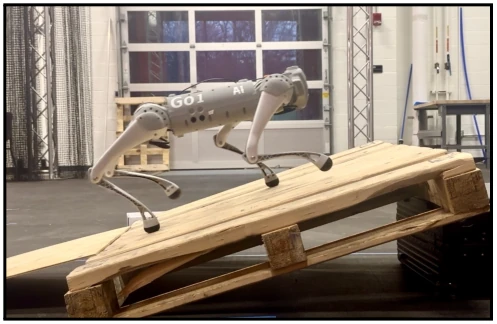
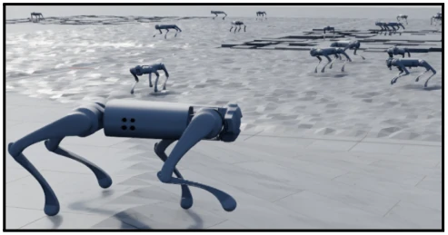
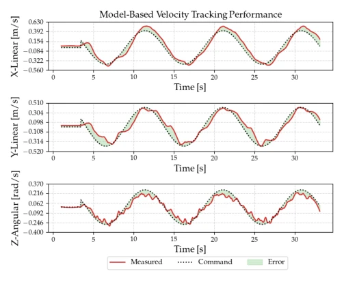
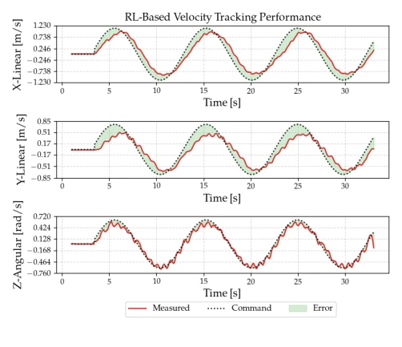
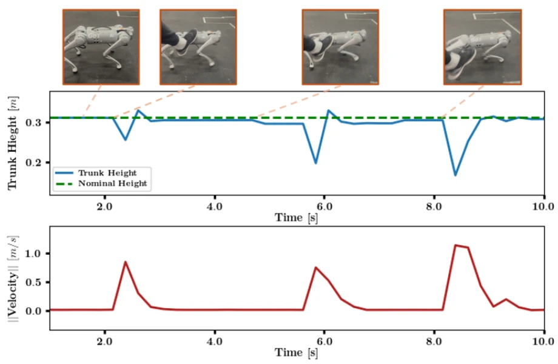

这篇论文算是给 Isaac Sim 和 Unitree Go1 做了一次“相亲大会”。作者试图用强化学习（RL）搞定四足机器人的全身控制，主打一个“零样本”迁移（zero-shot sim-to-real）。虽然用了最新的 Isaac Lab 和 Physx5.4，听起来很唬人，但本质上还是在玩 Domain Randomization 和 Reward Shaping 的老套路。最大的槽点是，所谓的“创新”更多是工程上的集成，而非算法层面的突破，比如 Actuator-Net 也是引用了现有方法 [23]。不过，能在 Go1 上跑通 2.0 m/s 的速度且抗干扰能力优于原厂控制器，这点确实值得给个好评。毕竟对于工业界来说，能直接部署的 RL 策略比纯理论模型更有价值，尤其是无需真实世界微调这一点，省去了大量调试成本。
This paper can be regarded as a "matchmaking event" for Isaac Sim and Unitree Go1. The authors attempt to achieve whole-body control of quadruped robots using Reinforcement Learning (RL), focusing on "zero-shot" sim-to-real transfer. Although the latest Isaac Lab and Physx5.4 are used, which sounds impressive, essentially it is still playing the old tricks of Domain Randomization and Reward Shaping. The biggest criticism is that the so-called "innovation" is more about engineering integration rather than algorithmic breakthroughs, for example, Actuator-Net also cites existing methods [23]. However, achieving a speed of 2.0 m/s on Go1 and having better disturbance rejection than the original controller is indeed worthy of a commendation. After all, for the industry, deployable RL strategies are more valuable than pure theoretical models, especially the point of no real-world fine-tuning, which saves a lot of debugging costs.
Traditional quadruped control relies on model-based methods such as ZMP or MPC [1]-[3], often falling short in complex terrains and struggling to handle nonlinear dynamics. Although learning-based methods (such as RL) perform excellently in simulation [4], [5], the famous "sim-to-real gap" has always been a stumbling block [12]. Existing research mostly relies on teacher-student network architectures [16] or requires extensive real-world fine-tuning [20], [21], increasing deployment costs. This paper aims to solve this pain point, utilizing the Isaac Sim platform to build a robust RL framework, achieving zero-shot transfer without real-world fine-tuning, and verifying the generalization ability of RL on real hardware.
The overall process is based on the Actor-Critic architecture of the PPO algorithm. First, a simulation environment is built in Isaac Sim, introducing terrain curriculum learning. The core innovation lies in two points: first, randomizing friction, mass, initial state, and terrain difficulty through Domain Randomization to enhance policy robustness; second, introducing Actuator-Net (MLP network) to simulate motor nonlinear dynamics [23], bridging the gap between simulation and real actuators. The observation space includes IMU data, joint states, and user commands, totaling 48 dimensions. The action space is 12-dimensional joint positions. The reward function is carefully designed, including gait synchronization, foot lift-off, speed tracking, and smoothness penalties, ensuring the policy not only walks steadily but also adapts to high-speed motion. Training uses 4096 parallel environments, taking about 3 hours. The MLP network adopts a three-layer 64-neuron structure, combined with specific reward weights (such as Table III), effectively balancing stability and agility.
Verified on the physical Unitree Go1 robot, with the baseline being the original integrated controller. Tests include sine velocity command tracking and thrust disturbance rejection tests. Results show that the RL strategy is comparable to the original controller in speed tracking (Fig. 3 vs Fig. 4), but performs better in disturbance rejection (Fig. 5), able to recover from three kicks of different intensities. Maximum linear speed reaches 2.0 m/s, angular speed 1.8 rad/s. Notably, the policy runs more stably at 100Hz than the 50Hz during training, and achieves 400Hz inference on Jetson Nano without GPU acceleration, demonstrating good engineering deployment potential. Kalman Filter is implemented in C++ to reduce latency.
其他图片Other Figures

Fig. 1. Unitree Go1 walking up an incline pallet using a end-to-end RL locomotion framework.

Fig. 2. Simulation of Unitree Go1 in Isaac Sim during policy inference. The simulation uses a terrain environment consisting of ramps, random height boxes, and a bumpy floor. During training, the terrain difficulty level as velocity tracking performance increases.

Fig. 4. Unitree’s model-based velocity tracking performance with a generated sinusoidal velocity command. Each plot, from top to bottom, shows the measured, commanded, and error for linear velocities x,y, and yaw angular velocity in z.

Fig. 3. Policy velocity tracking performance with a generated sinusoidal velocity command. Each plot, from top to bottom, shows the measured, commanded, and error for linear velocities x,y, and yaw angular velocity in z.

Fig. 5. Policy disturbance rejection during three separate kicking events. Each kick increased in force applied to the trunk of the quadruped. The green line represents the quadruped’s height in its nominal configuration, where, after a kicking event, the quadruped should return to this nominal height. The blue line represents the height of the quadruped during these events. As an approximation of the applied force from each kick, the linear velocity of the quadruped is shown by the red curve. The raw data was recorded at 25Hz, with the policy running at 100Hz.